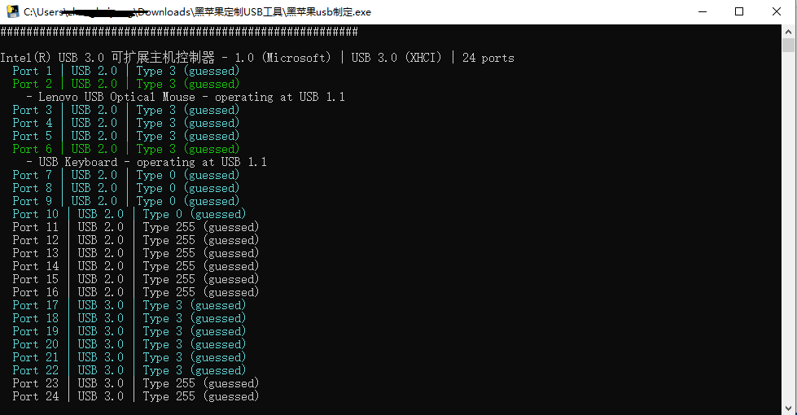
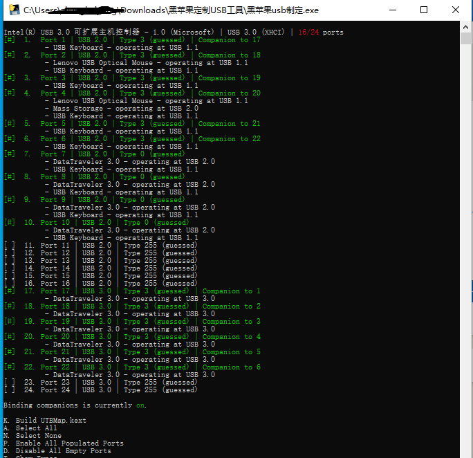
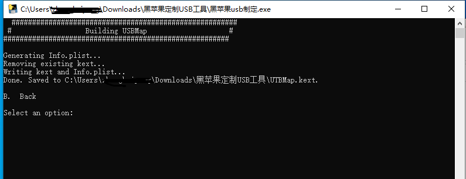
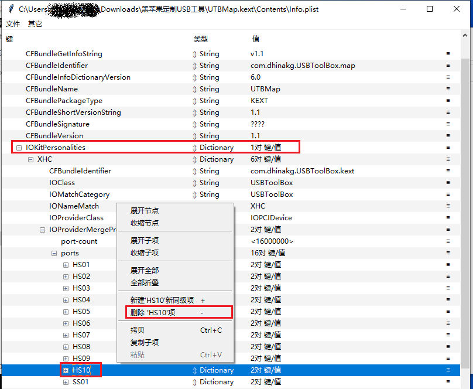

本文记录黑苹果安装过程
安装成功的设备：
笔记本：
1、ASUS FL8000UQ
台式机：
1、联想启天M420 B360
- EFI文件：https://github.com/bpefei/Lenovo-QiTian-M425-N050-OpenCore-EFI
- 解锁CFG Lock方法：https://github.com/oscnet/opencore-M420
安装前准备
软件准备
1、md5检查器WinMD5：https://www.winmd5.com/
2、磁盘分区工具Disk Genuis：https://www.diskgenius.cn/
3、U盘制作工具(选一个就行，我使用的是TransMac，balenaEtcher没有制作成功)：
- TransMac：https://www.acutesystems.com/scrtm.htm
- balenaEtcher：https://www.balena.io/etcher/
4、下载安装镜像
- 镜像下载：使用【黑果小兵】提供的镜像https://blog.daliansky.net/categories/%E4%B8%8B%E8%BD%BD/%E9%95%9C%E5%83%8F/
- macOS Monterey 12.1 21C5021h：https://mp.weixin.qq.com/s/oIpn3Aa6QeCXdtl8YDGBvA
- 下载完成后使用WinMD5校验md5值是否一致，如果不一致需要重新下载。
5、下载EFI
- 很多大佬分享了自己的EFI配置文件，可以参考Hackintosh黑苹果长期维护机型整理清单，选择适合自己的EFI。
- 如果在清单中找不到你的机型的EFI，可以到github上搜索。
- 如果还是没有找到，可以使用相近型号（配置相似）的EFI文件，新电脑可能找不到现成的EFI文件。
硬件
准备一个大于16G的U盘，用来制作系统盘。
硬盘最好使用固态硬盘，或者要兼容 APFS格式的硬盘，因为High Sierra 以上的系统都会自动转换硬盘为 APFS 格式。
如果磁盘为MBR格式，需要转换为GUID格式。可以使用DiskGenius工具进行转换：选中要转换的磁盘，点击菜单栏的【磁盘】，点击【转换分区表类型为GUID格式】，转换完成后保存更改。
其它硬件配置参考EFI文件对应的说明文档，检查你的电脑是否符合。
分配磁盘空间
分配磁盘空间用于安装macOS系统。
打开window自带的【磁盘管理】，如果没有空闲的磁盘分区，可以选择一个剩余空间大的磁盘，右键选择的磁盘选择【压缩卷】，单独分配部分空间出来，MAC系统需要占用30G左右，我分配了120G。
获取了单独的分区后，右键选择【删除卷】，得到120G的【空闲】分区
打开磁盘分区工具Disk Genuis，找到刚才删除的卷，右键单击选择【建立新分区】，文件系统类型选择【EFI system partition】主要用于分配EFI空间。EFI系统分区(ESP)用于存放可供引导启动系统的文件，将EFI文件存放在EFI系统分区中，这样黑苹果就不用使用U盘来引导了。
分区大小必须大于300Mb，我设置的大小为500Mb。
EFI分区设置完成后回到【磁盘管理】，选择剩下的未分配空间，右键选择【新建简单卷】，分配驱动器号，注意不要格式化。
U盘制作安装镜像
将macOS系统镜像写到U盘上
以管理员身份运行 TransMac，选择你的U盘：
- 格式化：选择【Format Disk for Mac】进行格式化操作
- 输入系统镜像：选择【Restore with Disk Image】，选择下载的系统镜像，等待刷入完成。
打开DiskGenius，替换U盘中的EFI
- 将U盘中的EFI删除
- 将刚才下载的EFI复制到U盘
定制USB
macOS Big Sur 11.3 限制了每个 USB 控制器 15 个端口上限，目前 OpenCore v0.6.8 关于 Kernel 的 Quirk - XhciPortLimit 在 macOS Big Sur 11.3 下失效，黑苹果无法使用超出 15 个以上的 USB 端口，未来 OpenCore 更新版本是否会修复还没有确切的消息。因此，如果要安装macOS Big Sur 11.3及以上版本，需要提前定制USB。
有多种定制USB方法，下面介绍在Windows10上定制USB的方法。
软件准备
提前准备如下软件、工具：
- USBToolBox：USB 接口发现及 USBMap.kext 生成工具
- USBToolBox.kext
- DiskGenius
- ProperTree：https://heipg.cn/apps/propertree-110.html
- Hackintool：用以验证定制结果
- USB3.0 接口的 U 盘
- 如果有 Type-c 接口，准备 Type-c 接口的 U 盘
生成 UTBMap.kext文件
打开USBToolBox，输入 D 发现端口

使用 USB3.0 的 U 盘挨个插拔所有USB接口，识别出 U 盘（变为绿色）后再移除设备。

可以看到一共有16个USB接口，由于USB3.0 接口同时兼容 USB2.0 接口，因此 3.0 接口会有两个端口。也就是本设备有6个USB3.0接口，4个USB2.0接口，一般机箱后面的接口为USB2.0。
全部插拔完成后，输入 B 回车返回上一级菜单。
然后输入S，回车

进入接口选择和 Kext 创建界面。

脚本会自动选择刚才识别到的USB接口。
输入 K 回车，生成 UTBMap.kext 文件，文件会生成到软件同级目录下。

删除多余端口
前面说过macOS Big Sur 11.3及以上版本只支持15个USB端口，现在有16个，需要删除多余的端口。下面删除一个USB2.0端口。
使用ProperTree打开 UTBMap.kext\Contents\Info.plist 文件，删除USB2.0端口10：

删除后保存。
然后使用DiskGenius工具将USBToolBox.kext和UTBMap.kext文件复制到 /EFI/OC/Kexts/目录下

更新config.plist
驱动放到Kexts目录下之后需要更新config.plist文件，将 /EFI/OC 目录下的config.plist文件复制到桌面。
使用ProperTree打开config.plist文件。进入Kernel -> Add，选中最后一项键值对，Ctrl + c 复制，然后选中Add，Ctrl + v 粘贴，执行两次粘贴操作。
修改对应的值，具体见下图。
取消加载USBInjectAll.kext以及USBPorts.kext(若没有可忽略)
设置XhciPortLimit（Kernel -> Quirks -> XhciPortLimit）为false
设置完成后保存。
使用DiskGenius将更新完成的config.plist文件覆盖到/EFI/OC 目录下。
安装
设置BIOS
win10系统接入BIOS界面方法（不同电脑接入BIOS方法不一样，请网上搜索具体步骤）：
点击开始菜单，选择【设置】-> 【恢复】->【立即重新启动】-> 【疑难解答】-> 【高级选项】->【UEFI固件设置】
BIOS设置：
- 关闭
SecureBoot - 关闭
FastBoot - 设置第一启动方式为U盘启动
解锁
CFG Lock(注意：不同主板的CFG Lock解锁方式不一样，下面是ASUS-FL8000UQ的解锁方式)- 将U盘格式化为FAT32格式；
- 打开CFG文件夹，将里面的EFI文件复制到U盘中，重启按ESC键选择U盘启动；
- 输入命令
setup_var_3 0x527 0x00即可解锁CFG Lock。
为什么要解锁CFG Lock呢？这涉及到MSR寄存器（Model Specific Register，特定模块寄存器），属于非标准寄存器，用来控制CPU的工作环境和读取工作状态，比如电压，温度，功耗等非程序性能指标。苹果系统的电源管理、CPU的P-state、C-state就是放在MSR寄存器里的。大多数UEFI主板厂家，锁定了MSR寄存器的第15位为只读，也就是MSR 0xE2 Locking（BIOS 中叫CFG Lock）。MSR 0xE2被锁定为只读后，AppleIntelCPUPowernamegement一旦去写入数据，马上就核心崩溃。安装黑苹果时，必须解锁MSR 0xE2，否则无法使用原生电源管理。
安装macOS
重启，按【ESC】（注意不同笔记本可能按键不一样）选择U盘引导，然后就是选择安装macOS了。
耐心等待…
出现安装界面，选择磁盘工具，点击继续
进入磁盘工具，选择准备的磁盘：这里要注意，千万不要选择有数据的盘，否则数据会全部删除。
点击抹掉，在弹出的窗口中输入名称，格式选择APFS
点击抹除，然后等待操作结束，点击完成，退出磁盘工具，选择安装macOS，点击继续，遇到同意就点击同意，选择要安装的磁盘卷标，点击继续。
耐心等待，会多次重启…
然后是系统初始化设置…
安装后的系统设置
先打开终端，输入几行命令：
1 | sudo spctl --master-disable # 启用macOS安装应用允许任何来源 |
安装homebrew1
sh/bin/zsh -c "$(curl -fsSL https://gitee.com/cunkai/HomebrewCN/raw/master/Homebrew.sh)"
将U盘中的EFI复制进硬盘
目的是脱离U盘启动。
下面介绍使用Hackintool工具配置方法。
macos下载Hackintool工具：https://github.com/headkaze/Hackintool
1、打开Hackintool工具，点击磁盘图标
2、选择安装系统的磁盘，点击挂载图标，输入用户密码
前面分配磁盘空间时新建了500Mb大小的EFI分区。
3、点击挂载磁盘和U盘的EFI分区，打开文件夹，将U盘的EFI分区中的EFI目录复制到固态硬盘的EFI分区里就可以了。
更多配置方法参考：
- https://blog.daliansky.net/Lenovo-Tianyi-510s-Mini-and-macOS-BigSur-Installation-Tutorial.html
- 【黑果小兵】【微信首发】Big Sur安装教程
好了，到此macOS就安装完成了！
参考资料：
- https://heipg.cn/
- https://blog.daliansky.net/Lenovo-Tianyi-510s-Mini-and-macOS-BigSur-Installation-Tutorial.html
- https://www.zdynb.cn/2020/jie-suo-cfg-lock.html
- https://blog.daliansky.net/Hackintosh-long-term-maintenance-model-checklist.html
- https://derrors.cn/index.php/hackintosh/dvmt-cfg.html
https://blog.csdn.net/weixin_42525211/article/details/112126322
- https://mp.weixin.qq.com/s/rUmTZMLC5Iyzzshk9K2v8A
- https://mp.weixin.qq.com/s/dlP60QcxcLrGYuXN4I44lg
- OCC配置器使用入门：驱动更新： https://post.smzdm.com/p/anxm88q2/
- OpenCore Configurator下载：https://heipg.cn/tag/opencore-configurator
本文标题:黑苹果安装笔记（更新）
文章作者:hiyo
文章链接:https://hiyongz.github.io/posts/macos-bigsur-hackintosh-installation-tutorial/
许可协议:本博客文章除特别声明外，均采用CC BY-NC-ND 4.0 许可协议。转载请保留原文链接及作者。